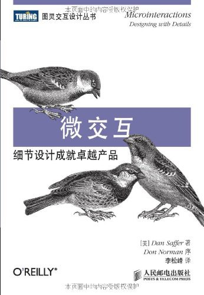

《微交互》

总体观点
宏大的产品功能构想决定了用户为何最初购买或下载一款软件，而细微如毫末的微交互（Microinteractions）则决定了用户是否会真正爱上并长久留在这个产品中。微交互是连接人类情感与数字世界的最灵动纽带。
任何一个完整的微交互都由严密的四大基石构成：启动交互的触发器（Trigger）、规定运转逻辑与约束的规则（Rules）、向用户清晰反馈系统状态的反馈（Feedback），以及决定长期演化与条件分支的循环与模式（Loops & Modes）。
卓越的产品体验往往体现在微小的摩擦消除与顺滑的物理直觉中。将繁琐死板的数据输入转化为丝滑的动效响应，消灭多余的跳转模态，在每一个一秒钟的交互瞬间为用户带来掌控感、安全感与适度的惊喜。
核心观点
-
1. 细节成就伟大：微交互是产品中单一用例的最小完整闭环
微交互不是宏大的功能系统，而是围绕单个具体任务（如设闹钟、给推文点赞、滑动切歌、修改密码）发生的微小瞬间。
iPhone 侧边的实体静音拨片：拨动时手机轻轻震动一下，屏幕顶部滑出橙色静音图标，一个小动作完成了全套优雅闭环。 -
2. 触发器：区分为用户主动发起的动作与系统预设的自动唤起
手动触发器必须具备强烈的视觉或触觉线索，提示用户“点这里可以开始”；系统触发器则根据环境上下文（时间、电量、位置）智能激活。
手动触发器：下拉邮件列表的手势；系统触发器：当手机电量低于 20% 时，系统自动无缝弹窗提示开启低电量模式。 -
3. 不可见的规则：规则是微交互的算法大脑，规定系统运转逻辑
规则定义了微交互能做什么、不能做什么，以及事件按什么顺序发生。优秀设计的规则顺应物理世界的直觉惯性，而非机械逻辑。
滑动查看相册照片时，划到底部不能生硬卡死，而是产生一个带弹性的橡胶阻尼拉伸效果，用自然物理学直观表达“已经到底了”。 -
4. 恰如其分的反馈：用微小、即时且不喧宾夺主的信号传递状态
反馈的唯一目的是向用户解释规则运行的结果。反馈应当精妙得体，多用微动效、微妙触觉或音效，绝不滥用粗暴弹窗。
微信双击好友头像时屏幕震动并提示“拍了拍”，给发送方微小触觉反馈，同时在聊天流里留下一行灰字，毫无侵入感。 -
5. 循环与模式：让系统根据历史频次与上下文自动适应用户
循环决定了微交互持续多久、何时重复以及如何逐渐演化；模式则为特殊情况开辟临时分支，但必须尽量避免模式切换打断用户心流。
长按删除键时，前两个字符按正常速度单字删除，持续按住两秒后删除速度呈指数级递增，自动适应用户快速清空长句的需求。 -
6. 消灭多余的模态：让修改与操作在原地一气呵成
修改一个简单名字不需要跳到一个全新的独立设置页面。就地点击变成输入框，回车即保存，把用户操作链路缩至最短。
Notion 中点击页面标题可以直接就地编辑，悬停在图标上就能一键更换 Emoji，所有操作都在当前视线焦点原地完成。 -
7. 在细节中注入适度愉悦：把枯燥的等待变成会心一笑
微交互是传递品牌个性与情感温度的最佳舞台。在空状态、网络刷新或成功达成目标时注入微动效，能极大化解焦虑。
Twitter 早期下拉刷新时经典的“小鸟扑棱翅膀”动效，把原本无聊焦躁的 1 秒钟网络等待变成了极具趣味的解压游戏。
全书结构
-
第1章 设计微交互
界定微交互的定义、解剖结构（触发器、规则、反馈、循环与模式）及其作为产品体验灵魂的战略价值。
将整个音乐播放器拆解为一系列独立的微交互：调节音量、拖动进度条、收藏歌曲、单曲循环切换，逐个打磨至极致。 -
第2章 触发器
剖析手动触发器（按钮、手势、语音）与系统触发器（定时、传感器、事件驱动）的设计原则，明确如何优雅唤醒交互。
智能手表检测到用户抬起手腕的重力加速度时（系统触发器），毫秒级点亮屏幕展示时间，手腕垂下时自动熄灭。 -
第3章 规则
指导如何构建微交互背后的严密逻辑机制：定义状态机、设定参数约束、处理极端边界情况，并利用简单算法解决复杂问题。
密码输入框的规则：当检测到包含大写字母、小写字母、数字且长度大于 8 位时，右侧的密码强度指示条逐格变绿。 -
第4章 反馈
阐明反馈的微观美学：如何选择最匹配的感官通道（视觉动效、UI声效、触觉震动），避免反馈过载与感官麻木。
手机刷卡乘车进地铁闸机时，闸机发出一声清脆的“嘀”声，手机马达震动两下，屏幕弹出绿色对勾，多通道确认通行无阻。 -
第5章 循环与模式
讲解长周期循环（如随着使用时间累积逐渐减少新手提示）与模式管理，阐明如何最小化模态以避免割裂用户的沉浸体验。
新手第一次打开相机时显示黄色对焦提示圈和文字说明，当用户成功拍摄 5 次后，文字提示自动永久消失只保留对焦圈。 -
第6章 综合实例
以具体真实案例全景演示一个完整微交互的从无到有打造过程，包括如何从大功能中挖掘细节、画状态转换图与原型验证。
以“设置恒温器温度”为例，从旋转物理滚轮的阻尼咔哒触觉，到屏幕温度数字放大变化，再到启动加热的轻微变红全流程。 -
附录 测试微交互
提供微交互落地的专项可用性测试与走查方法，指导如何评估细节是否顺畅、动效是否过火、反馈是否准确传达了系统规则。
用慢动作录屏一帧一帧检查滑动开关在不同手机上的缓动曲线（Easing Curve），确保滑动时没有丝毫掉帧或突兀粘滞感。